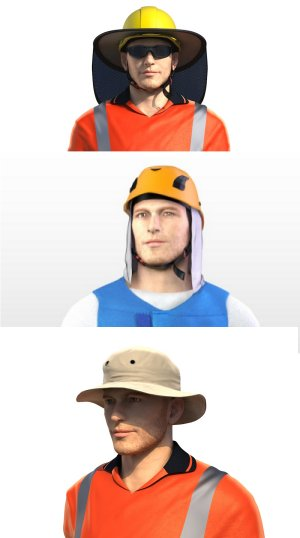

Standard-Schutzhelme bieten nur im Stirnbereich einen gewissen Schutz für Haut und Augen. Helme mit Nackentuch oder umlaufendem Schutzrand bieten einen zusätzlichen Schutz für Hals, Nacken und Ohren.
Hüte und Mützen als Kopfbedeckungen wo keine Helmpflicht besteht, zeigen deutliche Effektivitätsunterschiede. Das Sun Cape und die Fischermütze bieten insgesamt den umfangreichsten UV-Schutz.